Index into any list or array using array notation.
Example
${ Contacts[ 0 ].Name }Retrieve the size of any collection or array using Size property.
Example
${ Contacts.Size }Take advantage of actual conditional evaluation of the conditional operator. In the 0.2 release, the conditional operator would always evaluate both alternatives, which made it impossible to use it in cases where evaluating the unused alternative results in an error.
Example
In this example, evaluating the true alternative when the size of the contacts list is zero would produce an error.
${ Contacts.Size == 1 ? Contacts[ 0 ].Name : "multiple contacts" }The expression language in the 0.2 release supported navigating down the model hierarchy using Foo.Bar.Xyz syntax, but in certain cases it is useful to navigate up the model hierarchy. To support these scenarios, Parent and Root functions have been added.
Examples
${ Parent().Name == "John" }
${ Parent().Parent().Name == "John" }
${ Root().Name == "John" }
Construct a list from arbitrary number of operands using List function.
Example
${ List( 'TRIANGLE', 'RECTANGLE', 'SQUARE' ) }The new IN operator allows for a compact check to see if a given value is represented in a collection of values. The comparison semantics are the same as the '==' operator.
Example
${ ShapeType IN List( 'TRIANGLE', 'RECTANGLE', 'SQUARE' ) }The IN operator is largely semantically equivalent to multiple equality comparisons joined together with an OR operator.
${ ShapeType == 'TRIANGLE' || ShapeType == 'RECTANGLE' || ShapeType == 'SQUARE' }Contribute custom type casts to handle data type conversion in expressions. Custom type casts are registered in sapphire-extension.xml file.
Example
<extension>
<type-cast>
<source>java.lang.String</source>
<target>org.example.FooBar</target>
<impl>org.example.StringToFooBarTypeCast</impl>
</type-cast>
</extension>public class StringToFooBarTypeCast extends TypeCast
{
@Override
public Object evaluate( final FunctionContext context,
final Function requestor,
final Object value,
final Class<?> target )
{
return new FooBar( (String) value );
}
}In the past releases, the reference value properties were assumed to always use string as the reference type. The developer could only specify the reference target type. In this release, you can use a type other than a string for the reference.
Example
Use string as reference type, similar to what was possible in past releases.
@Reference( target = JavaType.class )
ValueProperty PROP_IMPL_CLASS = new ValueProperty( TYPE, "ImplClass" );
ReferenceValue<String,JavaType> getImplClass();
void setImplClass( String value );Example
Use a non-string type as reference type.
@Type( base = JavaTypeName.class )
@Reference( target = JavaType.class )
ValueProperty PROP_IMPL_CLASS = new ValueProperty( TYPE, "ImplClass" );
ReferenceValue<JavaTypeName,JavaType> getImplClass();
void setImplClass( String value );
void setImplClass( JavaTypeName value );
In certain cases, while a given XML element can have a number of child elements, one of the child elements occurs by itself with high frequency. In these cases, it useful to reduce the verbosity of XML by folding the child element into the parent.
Using the folding binding, it is possible to have the same value property bind to "xyz" string in both of the following examples. If a child element is added, first form will automatically transform into the second. Similarly, if all child element except the folding one are removed, the second form will automatically transform into the first.
<root>xyz</root><root>
<a>xyz</a>
...
</root>To use this feature, specify XML binding as follows:
@CustomXmlValueBinding( impl = FoldingXmlValueBindingImpl.class, params = "a" )Set params attribute to the name of the folding element. Take care not to apply this binding to more than one child element in a given parent.
Similar to the existing @WorkspaceRelativePath annotation, you can now use @ProjectRelativePath annotation to support paths relative to the root of the context project. Use this annotation in conjunction with @MustExist, @ValidFileSystemResourceType and @ValidFileExtensions annotations to gain validation, browse dialog and jump action (ctrl+click on path to open file). For this feature to work, the model must be based on a resource contained in a project.
Example
// *** WorkspaceRelativePath ***
@Type( base = Path.class )
@WorkspaceRelativePath
@MustExist
ValueProperty PROP_WORKSPACE_RELATIVE_PATH = new ValueProperty( TYPE, "WorkspaceRelativePath" );
Value<Path> getWorkspaceRelativePath();
void setWorkspaceRelativePath( String value );
void setWorkspaceRelativePath( Path value );
// *** ProjectRelativePath ***
@Type( base = Path.class )
@ProjectRelativePath
@MustExist
ValueProperty PROP_PROJECT_RELATIVE_PATH = new ValueProperty( TYPE, "ProjectRelativePath" );
Value<Path> getProjectRelativePath();
void setProjectRelativePath( String value );
void setProjectRelativePath( Path value );Relative path support now can handle both enclosed paths and those that use parent navigation "../" to reach outside. Override RelativePathService.enclosed() method as necessary. The default implementation returns true.
A common scenario for relative paths that reach outside the root is where the paths in the model should be relative to the location where the model is stored. Use the new @ModelRelativePath annotation to handle this case.
Example
// *** RelativePath ***
@Type( base = Path.class )
@ModelRelativePath
@MustExist
ValueProperty PROP_RELATIVE_PATH = new ValueProperty( TYPE, "RelativePath" );
Value<Path> getRelativePath();
void setRelativePath( String value );
void setRelativePath( Path value );The service implementation backing @ModelRelativePath may be instructive for those looking to implement a custom relative path service.
public class ModelRelativePathService extends RelativePathService
{
public List<Path> roots()
{
final File file = element().adapt( File.class );
if( file == null )
{
return Collections.emptyList();
}
else
{
return Collections.singletonList( new Path( file.getParent() ) );
}
}
public boolean enclosed()
{
return false;
}
}The new RelativePathService also exposes convertToRelative() and convertToAbsolute() methods. While the default implementation should be sufficient for most cases, the conversion methods can be overridden to support custom requirements. Some examples of such requirements include leading slash in front of a relative path and path variables.
The @Image annotation now resolves images straight from the class loader of the annotated type. When specifying an image, either use full path from class loader root (with '/' as the segment separator) or just the image file name if the image is located in the same package as the annotated type.
Example
The following declarations are equivalent.
package org.eclipse.sapphire.samples.contacts;
...
@Image( path = "Contact.png" )
@GenerateImpl
public interface IContact extends IModelElement
{
...
}package org.eclipse.sapphire.samples.contacts;
...
@Image( path = "org/eclipse/sapphire/samples/contacts/Contact.png" )
@GenerateImpl
public interface IContact extends IModelElement
{
...
}The API for model element image provider has been changed to unify it with the model element services API and to support notification of image changes.
Example
This following code is taken from the calendar sample. The event attendee image varies based on whether or not attendee is found in the contacts directory.
@Image( path = "org/eclipse/sapphire/samples/contacts/Contact.png" )
@Service( impl = AttendeeImageService.class )
public interface IAttendee extends IModelElement
{
...
}
...
public class AttendeeImageService extends ImageService
{
private static final ImageData IMG_PERSON
= ImageData.readFromClassLoader( IContact.class, "Contact.png" );
private static final ImageData IMG_PERSON_FADED
= ImageData.readFromClassLoader( IContact.class, "ContactFaded.png" );
private ModelPropertyListener listener;
@Override
public void init( IModelElement element, String[] params )
{
super.init( element, params );
this.listener = new ModelPropertyListener()
{
@Override
public void handlePropertyChangedEvent( final ModelPropertyChangeEvent event )
{
notifyListeners( new ImageChangedEvent( AttendeeImageProviderService.this ) );
}
};
element.addListener( this.listener, IAttendee.PROP_IN_CONTACTS_DATABASE.getName() );
}
@Override
public ImageData provide()
{
if( ( (IAttendee) element() ).isInContactsDatabase().getContent() )
{
return IMG_PERSON;
}
else
{
return IMG_PERSON_FADED;
}
}
@Override
public void dispose()
{
super.dispose();
element().removeListener( this.listener, IAttendee.PROP_IN_CONTACTS_DATABASE.getName() );
}
}Use @Image annotation on enumeration items. The images will be shown where appropriate, such when a list of enumeration values is presented using a checkbox list.
Example
public enum DispatcherEvent
{
@Label( standard = "forward" )
@Image( path = "CircleBlue.png" )
FORWARD,
@Label( standard = "include" )
@Image( path = "CircleCyan.png" )
INCLUDE,
@Label( standard = "request" )
@Image( path = "CircleGreen.png" )
REQUEST,
@Label( standard = "error" )
@Image( path = "CircleRed.png" )
ERROR
}
public interface IDispatcherEventRef extends IModelElement
{
ModelElementType TYPE = new ModelElementType( IDispatcherEventRef.class );
// *** DispatcherEvent ***
@Type( base = DispatcherEvent.class )
@Required
@NoDuplicates
ValueProperty PROP_DISPATCHER_EVENT = new ValueProperty( TYPE, "DispatcherEvent" );
Value<DispatcherEvent> getDispatcherEvent();
void setDispatcherEvent( String value );
void setDispatcherEvent( DispatcherEvent value );
}
public interface IFilterMapping extends IModelElement
{
ModelElementType TYPE = new ModelElementType( IFilterMapping .class );
// *** DispatcherEvents ***
@Type( base = IDispatcherEventRef.class )
ListProperty PROP_DISPATCHER_EVENTS = new ListProperty( TYPE, "DispatcherEvents" );
ModelElementList<IDispatcherEventRef> getDispatcherEvents();
...
}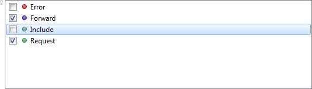
Provide custom labels and images for values. These will be used where possible when presenting the value to the user. Some examples include list property editor, checkbox list property editor, slush bucket property editor and possible values browse dialog.
Example
public class ColorValueLabelService extends ValueLabelService
{
@Override
public String provide( String value )
{
if( value != null )
{
if( value.equals( "red" ) )
{
return "Red [FF0000]";
}
else if( value.equals( "orange" ) )
{
return "Orange [FF8A00]";
}
else if( value.equals( "yellow" ) )
{
return "Yellow [FFF200]";
}
else if( value.equals( "green" ) )
{
return "Green [00BC00]";
}
else if( value.equals( "blue" ) )
{
return "Blue [0000FF]";
}
else if( value.equals( "violet" ) )
{
return "Violet [8A00FF]";
}
}
return value;
}
}
public class ColorValueImageService extends ValueImageService
{
private final Map<String,ImageData> images = new HashMap<String,ImageData>();
@Override
public ImageData provide( String value )
{
ImageData image = this.images.get( value );
if( image == null )
{
String imageResourceName = null;
if( value != null )
{
if( value.equals( "red" ) )
{
imageResourceName = "SquareRed.png";
}
else if( value.equals( "orange" ) )
{
imageResourceName = "SquareOrange.png";
}
else if( value.equals( "yellow" ) )
{
imageResourceName = "SquareYellow.png";
}
else if( value.equals( "green" ) )
{
imageResourceName = "SquareGreen.png";
}
else if( value.equals( "blue" ) )
{
imageResourceName = "SquareBlue.png";
}
else if( value.equals( "violet" ) )
{
imageResourceName = "SquareViolet.png";
}
}
if( imageResourceName != null )
{
final String imageResourcePath = "org/eclipse/sapphire/samples/" + imageResourceName;
image = readFromClassLoader( ColorValueImageService.class, imageResourcePath );
}
}
return image;
}
}
public interface IColor extends IModelElement
{
ModelElementType TYPE = new ModelElementType( IColor.class );
// *** Code ***
@Label( standard = "color code" )
@NoDuplicates
@PossibleValues( values = { "red", "orange", "yellow", "green", "blue", "violet" }, invalidValueMessage = "{0} is not a valid color." )
@Services( { @Service( impl = ColorValueLabelService.class ), @Service( impl = ColorValueImageService.class ) } )
ValueProperty PROP_CODE = new ValueProperty( TYPE, "Code" );
Value<String> getCode();
void setCode( String value );
}
public interface ICustomModel extends IModelElement
{
...
// *** Colors ***
@Type( base = IColor.class )
@Label( standard = "colors" )
ListProperty PROP_COLORS = new ListProperty( TYPE, "Colors" );
ModelElementList<IColor> getColors();
}Use @Required (formerly @NonNullValue) on both value properties and element properties. If a required property is not set, a validation error will be shown.
Examples
@Required
ValueProperty PROP_NAME = new ValueProperty( TYPE, "Name" );
Value<String> getName();
void setName( String name );@Type( base = IOccupation.class, possible = { IJobOccupation.class, IStudentOccupation.class, IHomemakerOccupation.class } )
@Required
ElementProperty PROP_PRIMARY_OCCUPATION = new ElementProperty( TYPE, "PrimaryOccupation" );
ModelElementHandle<IOccupation> getPrimaryOccupation();Use the new @Whitespace annotation on value properties to control exactly how whitespace in property values is normalized. By default, leading and trailing whitespace is removed.
Example
Preserve all whitespace, including leading and trailing.
@Whitespace( trim = false )
ValueProperty PROP_TEXT = new ValueProperty( TYPE, "Text" );
Value<String> getText();
void setName( String value );Remove leading and trailing whitespace. Further, replace all sequences of one or more whitespace characters with a single space character.
@Whitespace( trim = true, collapse = true )
ValueProperty PROP_TEXT = new ValueProperty( TYPE, "Text" );
Value<String> getText();
void setName( String value );Implement custom value normalization via ValueNormalizationService.
Example
@Service( impl = CustomValueNormalizationService.class )
ValueProperty PROP_TEXT = new ValueProperty( TYPE, "Text" );
Value<String> getText();
void setName( String value );public class CustomValueNormalizationService extends ValueNormalizationService
{
public String normalize( String str )
{
...
}
}Extend StandardValueNormalizationService to add custom normalization logic to what is provided by the system.
Example
@Whitespace( trim = true, collapse = true )
@Service( impl = CustomValueNormalizationService.class )
ValueProperty PROP_TEXT = new ValueProperty( TYPE, "Text" );
Value<String> getText();
void setName( String value );public class CustomValueNormalizationService extends StandardValueNormalizationService
{
public String normalize( String str )
{
str = super.normalize( str );
...
}
}Use the new @ClearOnDisable annotation to specify that the property value should be cleared when the property transitions from enabled to disabled state. This can be useful for pruning unnecessary data from the model and persistent storage, but can make it more difficult for users to return to the prior state as data is erased.
Example
@Type( base = Integer.class )
@Enablement( expr = "${ ShapeType IN List( 'CIRCLE', 'PENTAGON', 'HEXAGON', 'HEPTAGON', 'OCTAGON' ) }" )
@ClearOnDisable
ValueProperty PROP_RADIUS = new ValueProperty( TYPE, "Radius" );
Value<Integer> getRadius();
void setRadius( String value );
void setRadius( Integer value );WARNING: Avoid using the @ClearOnDisable annotation with expressions that are not atomic in evaluation
as the property enablement can briefly go through
Consider the following two enablement expressions:
${ ShapeType IN List( 'TRIANGLE', 'RECTANGLE', 'SQUARE' ) }
${ ShapeType == 'TRIANGLE' || ShapeType == 'RECTANGLE' || ShapeType == 'SQUARE' }While these two expressions are semantically equivalent, when ShapeType changes, the first expression is re-evaluates
once while the second expressions is re-evaluated three times. Depending on the starting and ending value of ShapeType,
the enablement state can briefly go through
When specifying @JavaTypeConstraint, one can list zero or more base types that the type must extend or implement. Prior to 0.3 release, the semantics were always such that the type must extend or implement all of the specified types. This is still the default behavior, but you can now override it to specify that the type only need to extend or implement one of the specified types.
@Type( base = JavaTypeName.class )
@Reference( target = JavaType.class )
@JavaTypeConstraint( kind = JavaTypeKind.CLASS, type = { "java.util.List", "java.util.Map" }, behavior = JavaTypeConstraintBehavior.AT_LEAST_ONE )
@MustExist
@Required
ValueProperty PROP_CLASS = new ValueProperty( TYPE, "Class" );
ReferenceValue<JavaTypeName,JavaType> getClass();
void setClass( String value );
void setClass( JavaTypeName value );It is hard to beat the simplicity and flexibility of HTML for presenting formatted text content. Now it is even easier to weave in a bit of HTML into a Sapphire UI. The new HTML part can display static HTML content embedded in an sdef file, content retrieved from a URL or content retrieved from the model.
Frequently, it is easier to specify HTML content in the form of a fragment rather than a finished document. Sapphire will automatically turn a fragment into a legal document and apply default style that is designed to match the look of surrounding UI elements.
<html>
<fragment>true</fragment>
<content>
Here is the list of ${ Name }'s favorite colors:<br/><br/>
<ol>
<li>Red</li>
<li>Orange</li>
<li>Blue</li>
</ol>
</content>
</html>Note how HTML tags have to be escaped in order to not be treated as part of the XML markup of the sdef file. Also note that you are able to use expressions in the body of the content to enhance the content with data from the model or external sources.
It is now possible to put related content to the right of a property editor.
The space for related content is carved out from the space reserved for the main property editor. As such, it is bound by the height of that property editor, but multiple parts can be added to related content as long as vertical space allows. This can happen if the main property editor is a table or a multi-line text box.
Horizontal space between the main property editor and related content is divided by an adjustable splitter. You get to set the initial width allocation for the related content in the sdef file. The default is 40, which stands for 40% of available space.
Use related content to display two property editors on one line. This pattern is especially powerful when the relationship of two properties is such that a single label will suffice.
Display more than two parts on one line by nesting related content inside related content. Use sparingly.
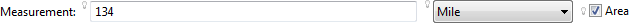
Related content isn't limited to property editors. Any part can be placed into related content. This is particularly useful when the main property editor spans more than one vertical line, such as a list property editor or a multi-line text box. In this example, related content is used to display explanatory text.
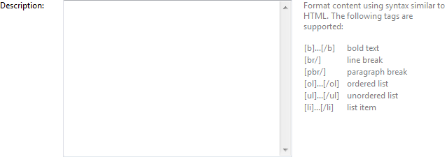
Multiple parts can be placed into related content. They will be arranged vertically.
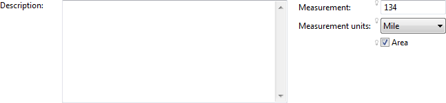
Labels for actions and action handlers can now be specified using expressions. This is currently mostly useful for action labels, where you can reference active handlers while composing the label.
Example
This following is the actual label definition for the Sapphire.Add action. It is designed to include handler label in the action label when there is only one handler.
${ Handlers.Size == 1 ? Concat( "add ", Handlers[ 0 ].Label ) : "add" }More control over the presentation of the boolean property is possible with the new "checkbox.layout" property editor hint. The various values for this hint are explained in this screen capture from the gallery sample:
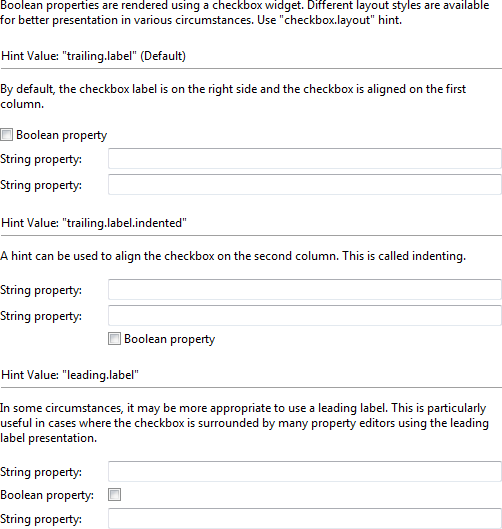
You can now easily contribute content to the properties view based on the current context in a Sapphire form or diagram editor page. The following contexts can currently host properties view content:
Multiple pages of content can be defined for the properties view. The pages are accessible via tabs on the left side of the properties view. The content of properties view pages is defined and rendered by Sapphire.
Example
In this screen capture, the architecture sample is shown with focus on one of the components. The details of the component are shown in the properties view.
If no content is contributed to the properties view for a given context, the view will state as much.
Example
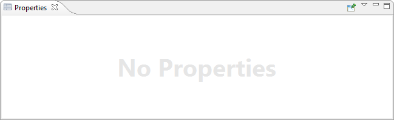
You can also specify an image to be used for a content page. This not only makes it easier for users to visually differentiate pages, but the system will also add a problem badge if any of the page's content has validation problems.
Example
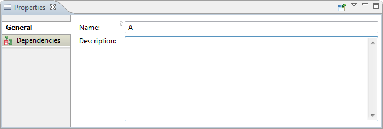
Define the properties view contribution right in the sdef file as part of the definition of the context part.
<node>
...
<properties-view>
<page>
<label>general</label>
<content>
<property-editor>Name</property-editor>
<property-editor>Description</property-editor>
</content>
</page>
<page>
<label>dependencies</label>
<image>Dependencies.png</image>
<content>
<property-editor>Dependencies</property-editor>
</content>
</page>
</properties-view>
</node>Use expressions to specify images for content outline nodes and other parts. This allows the image to vary based on a condition, such as a property value.
When specifying an image in an expression, either use full path from class loader root (with '/' as the segment separator) or import the package where the image is located.
Example
In this example from the architecture sample, parent node image is defined statically, while child node image varies based on the number dependencies.
<import>
<package>org.eclipse.sapphire.samples.architecture</package>
</import>
...
<node>
<label>components</label>
<image>Components.png</image>
<node-list>
<property>Components</property>
<node-template>
<model-element-type>IComponent</model-element-type>
<label>${ Name == null ? "<component>" : Name }</label>
<image>${ Dependencies.Size == 0 ? "ComponentLeaf.png" : "Component.png" }</image>
...
</node-template>
</node-list>
...
</node>Use ancestor access path syntax (leading "/" for root and ".." for parent) when specifying a property editor or using the with directive. The path used in a property editor definition must end with a property name, while the path used in a with directive can end with an element or an element property name.
Examples
Edit property Text of the context element.
<property-editor>Text</property-editor>Edit property Text of the parent of the context element.
<property-editor>../Text</property-editor>Edit property Text of the grandparent of the context element.
<property-editor>../../Text</property-editor>Edit property Text of the root element.
<property-editor>/Text</property-editor>Shift context to the element held by Child property.
<with>
<path>Child</path>
<default-panel>
<content>
...
</content>
</default-panel>
</with>Shift context to the parent element.
<with>
<path>..</path>
<default-panel>
<content>
...
</content>
</default-panel>
</with>Shift context to the grandparent element.
<with>
<path>../..</path>
<default-panel>
<content>
...
</content>
</default-panel>
</with>The presentation of the with directive has been enhanced to better support the case where an element property has a large number of possible types. The presentation will now use a drop down list instead of radio buttons if there are more than three possible types. You can also use the new style hint to suggest the desired presentation.
The new hint name is "style" and it has three possible values for the with directive: "checkbox", "radio.buttons" and "drop.down.list". If a particular style is not appropriate for the situation, the hint will be ignored. For instance, selecting "checkbox" style for an element property with more than one possible type is not valid.
Examples
Default presentation when the element property has one possible type.
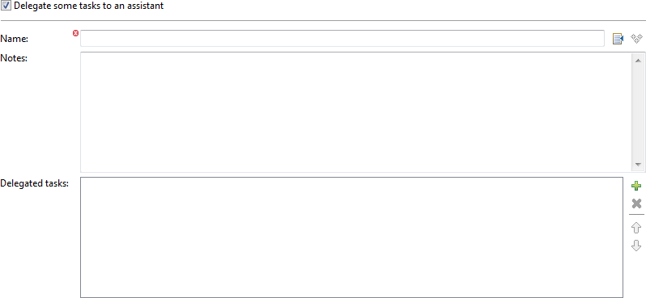
The same property as above, but with style hint set to "radio.buttons".
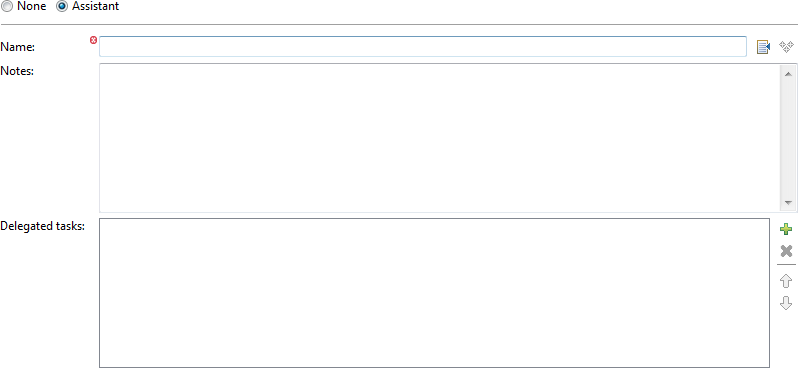
Default presentation when the element property has three possible types.
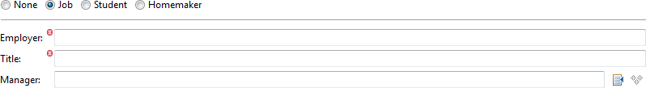
The same property as above, but with style hint set to "drop.down.list".

The master details editor page has been made more flexible by allowing nodes in the content outline based on element properties. The syntax and semantics are identical to how list properties are handled.
Example
<node-factory>
<property>Heterogeneous</property>
<case>
<model-element-type>IChildElementWithInteger</model-element-type>
<label>${ StringValue == null ? "<child-with-integer>" : StringValue }</label>
<section>
<label>child element with integer</label>
<content>
<property-editor>StringValue</property-editor>
<property-editor>IntegerValue</property-editor>
</content>
</section>
</case>
<case>
<model-element-type>IChildElementWithEnum</model-element-type>
<label>${ StringValue == null ? "<child-with-enum>" : StringValue }</label>
<section>
<label>child element with enum</label>
<content>
<property-editor>StringValue</property-editor>
<property-editor>EnumValue</property-editor>
</content>
</section>
</case>
<case>
<model-element-type>IChildElement</model-element-type>
<label>${ StringValue == null ? "<child>" : StringValue }</label>
<section>
<label>child element</label>
<content>
<property-editor>StringValue</property-editor>
</content>
</section>
</case>
</node-factory>Use action style hint to control how actions are presented. The style hint will be respected if feasible.
| image | Only image is presented. |
| image+text | Text will be presented to the right of the image. |
| text | Only text is presented. |
Example
The following example is taken from the gallery sample.
<action>
<id>Sapphire.Gallery.Open.Homepage</id>
<label>Sapphire Homepage</label>
<image>Web.png</image>
<description>Open Sapphire project homepage</description>
<context>Sapphire.EditorPage</context>
<hint>
<name>style</name>
<value>image+text</value>
</hint>
</action>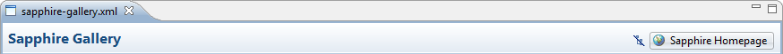
Specify an image to appear on the left side of the editor page header.
Example
The following example is taken from the gallery sample.
<editor-page>
...
<page-header-image>SapphireFile.png</page-header-image>
...
</editor-page>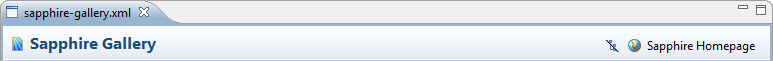
The checkbox list property editor is now the default presentation for enum lists. An enum list is defined as follows:
Example
public enum DispatcherEvent
{
FORWARD,
INCLUDE,
REQUEST,
ERROR
}
public interface IDispatcherEventRef extends IModelElement
{
ModelElementType TYPE = new ModelElementType( IDispatcherEventRef.class );
// *** DispatcherEvent ***
@Type( base = DispatcherEvent.class )
@Required
@NoDuplicates
ValueProperty PROP_DISPATCHER_EVENT = new ValueProperty( TYPE, "DispatcherEvent" );
Value<DispatcherEvent> getDispatcherEvent();
void setDispatcherEvent( String value );
void setDispatcherEvent( DispatcherEvent value );
}
public interface IFilterMapping extends IModelElement
{
ModelElementType TYPE = new ModelElementType( IFilterMapping .class );
// *** DispatcherEvents ***
@Type( base = IDispatcherEventRef.class )
ListProperty PROP_DISPATCHER_EVENTS = new ListProperty( TYPE, "DispatcherEvents" );
ModelElementList<IDispatcherEventRef> getDispatcherEvents();
...
}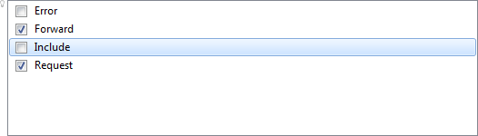
Define collapsible sections. This is one approach for handling too much content to fit on the screen. Another, typically more effective, approach is to break up content between more nodes in the content outline. A collapsible section can be defined to be showed initially in the collapsed state. This can be effective for very infrequently used content.
Example
<section>
<label>collapsible section</label>
<content>
<label>A section can be collapsible... [snip]</label>
<spacer></spacer>
<property-editor>Text</property-editor>
<property-editor>ThreeChoiceAnswer</property-editor>
</content>
<collapsible>true</collapsible>
</section>
<section>
<label>collapsed initially section</label>
<content>
<label>A collapsible section can be specified to be showed collapsed initially.</label>
<spacer></spacer>
<property-editor>Text</property-editor>
<property-editor>ThreeChoiceAnswer</property-editor>
</content>
<collapsible>true</collapsible>
<collapsed-initially>true</collapsed-initially>
</section>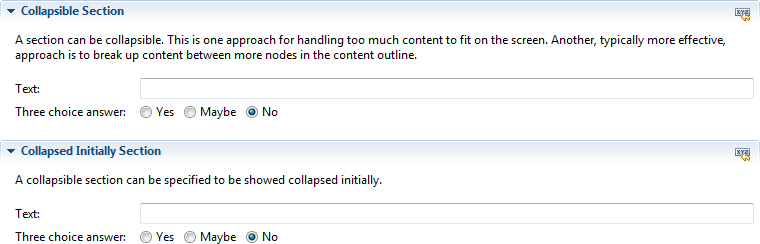